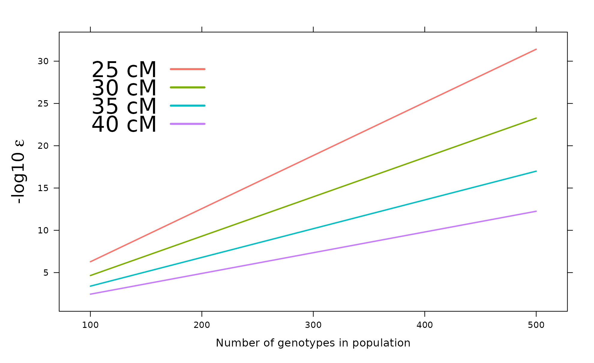
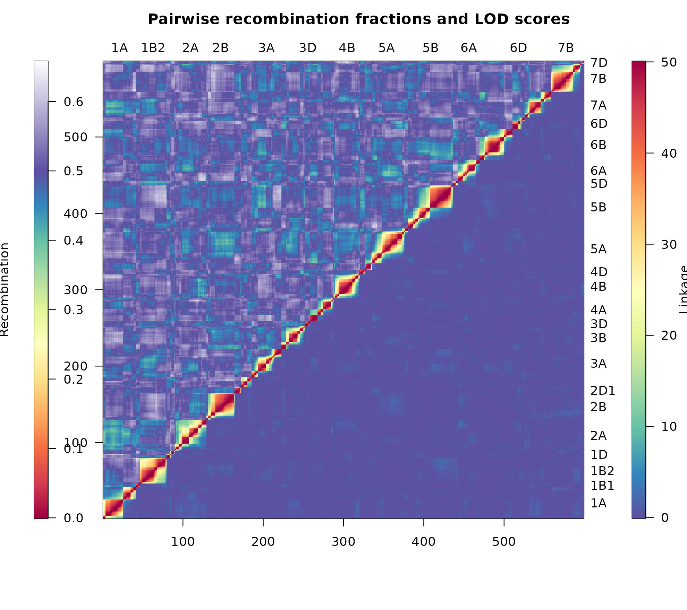

This article constructs a linkage map from a set of unordered marker scores, discusses the single argument that most influences the outcome, and indicates how the resulting map may be assessed. It is intended as an entry point to the remaining documentation.
Construction is performed by the MSTmap algorithm (Wu 2008), which clusters markers into linkage groups and determines an optimal order within each group in a single pass. This is in contrast to the two-stage procedures common elsewhere, in which an initial non-exhaustive ordering is followed by an exhaustive search within a sliding marker window.
Installation
install.packages("ASMap")
# development version
# install.packages("devtools")
devtools::install_github("DrJ001/ASMap")Construction from a set of marker scores
mapDHf is an unconstructed doubled haploid wheat marker
set, supplied in the layout the construction function requires:
markers in rows, genotypes in columns, with marker
names held in the rownames and genotype names in the
names.
The package datasets are not lazy-loaded, and therefore require an explicit
data()call. Its omission results inobject 'mapDHf' not found.
[1] 599 218
mapDHf[1:5, 1:6] DH1 DH2 DH3 DH4 DH5 DH6
5B.m.2 B B B A A B
5A.m.52 B B A A B A
2B.m.1 A B A B B A
6B.m.3 B B A B A A
5A.m.43 B B A B B AA single call clusters the markers into linkage groups, orders the markers within each group and estimates the genetic distances between them.
map <- mstmap(mapDHf, pop.type = "DH", dist.fun = "kosambi", p.value = 1e-06)Number of linkage groups: 24
The size of the linkage groups are: 56 54 35 41 4 37 6 30 40 27 37 13 15 10 21 6 32 33 33 41 6 9 5 8
The number of bins in each linkage group: 55 53 34 41 3 36 6 29 40 27 36 13 14 9 21 5 32 33 32 41 5 8 4 7
nchr(map)[1] 24 L1 L2 L3 L4 L5 L6 L7 L8 L9 L10 L11 L12 L13
142.8 181.9 97.4 115.4 21.7 108.2 13.3 133.9 153.2 98.7 145.8 60.4 72.2
L14 L15 L16 L17 L18 L19 L20 L21 L22 L23 L24
81.2 98.2 8.7 109.5 60.9 134.5 104.0 18.0 7.8 7.8 19.2 The value returned is an R/qtl cross object, so the
facilities of the qtl package (Broman and Wu 2014) are
immediately available for further examination of the map.
summary(map)Warning in summary.cross(map): Some markers at the same position on chr
L1,L2,L3,L5,L6,L8,L11,L13,L14,L16,L19,L21,L22,L23,L24; use jittermap(). Doubled haploids
No. individuals: 218
No. phenotypes: 1
Percent phenotyped: 100
No. chromosomes: 24
Autosomes: L1 L2 L3 L4 L5 L6 L7 L8 L9 L10 L11 L12 L13 L14 L15 L16
L17 L18 L19 L20 L21 L22 L23 L24
Total markers: 599
No. markers: 56 54 35 41 4 37 6 30 40 27 37 13 15 10 21 6 32 33 33 41
6 9 5 8
Percent genotyped: 99.8
Genotypes (%): AA:51.2 BB:48.8
plotMap(map)Construction from an existing cross object
Where the markers already reside in a cross object, the
same generic accepts it directly. Setting bychr = FALSE
combines all markers and reconstructs the map in its entirety,
disregarding the existing linkage groups.
Number of linkage groups: 24
The size of the linkage groups are: 41 5 33 10 40 35 8 13 37 30 6 9 21 32 6 54 56 6 27 41 15 33 37 4
The number of bins in each linkage group: 41 4 33 9 40 34 7 13 36 29 5 8 21 32 6 53 55 5 27 41 14 32 36 3
nchr(map2)[1] 24Setting bychr = TRUE instead retains the existing groups
and re-orders the markers within them. Two combinations of arguments are
used repeatedly throughout this documentation:
# cluster and order from scratch, disregarding existing linkage groups
mstmap(cross, bychr = FALSE, p.value = 1e-12)
# re-order within existing linkage groups, without splitting them
mstmap(cross, bychr = TRUE, p.value = 2)A p.value greater than unity suppresses clustering
entirely, which is the mechanism underlying the second of these.
The choice of p.value
The p.value argument determines the threshold at which
markers are separated into distinct linkage groups. Its appropriate
value depends strongly upon the size of the population, larger
populations requiring a smaller value, and some experimentation is
generally necessary. The relationship may be examined directly with
pValue(), which permits the choice to be made on a
considered basis.

For a population of approximately 300 individuals, a
p.value of 1e-12 corresponds to a threshold of
some 30 cM before markers are assigned to a common linkage group.
Assessment of the constructed map
heatMap() displays the pairwise estimated recombination
fractions and the pairwise LOD scores of linkage together, each with its
own legend. Consistent heat within a linkage group indicates strong
linkage between neighbouring markers, and blocks of shared heat between
groups suggest groups that may require merging.
heatMap(mapDH, lmax = 50)
Further reading
| Article | Subject |
|---|---|
| How the MSTmap algorithm works | The minimum spanning tree formulation, clustering and marker ordering |
| Constructing a linkage map | Both construction functions and the MSTmap parameters |
| Pulling and pushing markers | Setting problematic markers aside and reintroducing them |
| Diagnosing genotypes and markers | Profiling of individuals, markers and intervals; genetic clones |
| Heat maps | Interpretation and tuning of the recombination fraction and LOD display |
| Manipulating linkage maps | Breaking, merging, subsetting and combining maps |
| Worked example I: construction | A barley backcross, from raw markers to a constructed map |
| Worked example II: refinement | Reintroduction of markers, merging of groups, fine mapping |
| Notes on the MSTmap algorithm | Distance calculations, mvest.bc and
detectBadData
|
The package should be cited in published work as Taylor and Butler (2017); citation("ASMap") gives
the current entry.